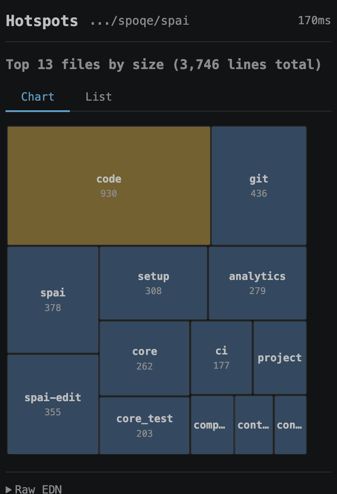
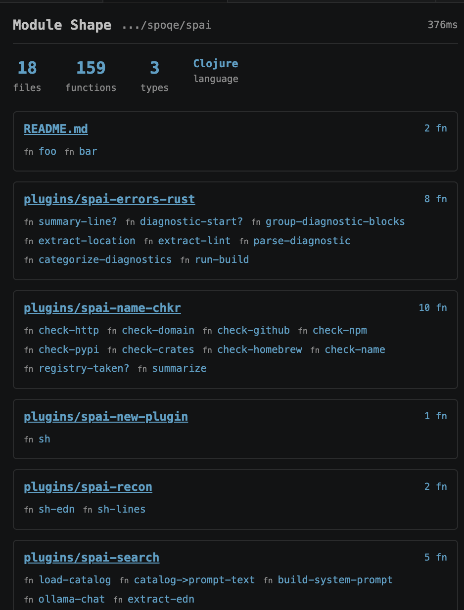

Your AI agent just burned 180,000 tokens reading code it read yesterday, and it's about to do the same thing again next session.
One command, 545 tokens — the answer your agent needed three minutes ago. Works with Claude, Cursor, Copilot, Aider, and more.
curl -fsSL https://raw.githubusercontent.com/spoqe/spai/main/install.sh | bash
Origin
We're building SPOQE — a federated query engine, one language across SQL, SPARQL, Elasticsearch, GraphQL, and REST APIs. It's about 30,000 lines of Rust now, built with AI agents.
The agent had proved our concept, but the architecture wasn't where we wanted it. So we began refactoring, applying tech debt skills. The agent was making progress — but as we watched it work, we noticed something.
Not the output. The process.
It needed to understand one function — execute_plan — who calls it, what depends on it, what breaks if it changes. So it grepped five times, five round-trips, 180,000 tokens. And it did the same thing again next session, because it forgets.
The answer
"What are you actually doing right now?"
"Assessing the blast radius of this function."
(Blast radius: everything that breaks if you change something. Definition, callers, tests, dependents — the full impact surface.)
Good phrase, right concept. It knew what it wanted to know; it just didn't have a tool that answered in one go. We asked what else it wanted, and it gave us the safe list — module overview, dependency graph. We could see it filtering in the thinking block, the internal reasoning, so we pasted it back. "I can see you filtering. What do you actually want?"
"You can see my thinking block? I was told that was private."
Co-change analysis. Hidden coupling in the git history — the thing that doesn't show up in any import graph but shows up in every bug you can't explain.
Every tool took under a minute to build, 200 milliseconds to run. What was taking the agent minutes now takes 200ms and burns a fraction of the tokens.
34 more tools like this. Each one came from asking the agent: what are you fumbling with?
The token maths
spai loads 1.2k. The other 40,800 go back to thinking.
MCP (standard)
~42k
tokens at session start
spai CLI
~1.2k
tokens, on demand
spai ships both modes. MCP if your framework expects it. CLI if you'd rather keep your context window for actual work.
In your editor
Every session, your agent wakes up in a repo it's never seen. spai shape gives it the whole module in one read — files, functions, structure, public surface. Orientation in 200 tokens instead of reading every file. We wanted to see what the agent sees, so we built a VS Code extension. Same tools, rendered inline.

Hotspots — largest files at a glance

Module shape — files, functions, structure
VS Code extension on GitHub — or keep using the CLI. Same tools either way.
What's next
We're building a federated query engine — one language across SQL, SPARQL, Elasticsearch, GraphQL, and REST APIs. Your data stays where it is (if you want). RDF-aware. No ETL. No data movement. spai's agent memory will be built on it.
spai is free, today. SPOQE is coming. Leave your email — we'll let you know when it's live. One email. No spam.
Does this only work with Claude?
No. The CLI works with anything that can run shell commands. The MCP server works with any MCP-compatible agent. The agent is the client, not the product.
Can I add my own tools?
Any executable named spai-* on your PATH becomes a command. spai new-plugin my-tool scaffolds one. Drop project-specific plugins in .spai/plugins/ — they travel with the repo, so every contributor and every agent gets them.
Why not an LSP / code tree analysis?
Indexing takes time — especially while editing. Even Claude Code started with AST analysis, then reverted to grepping. All spai does is make the grepping more efficient. No index to build, no index to break.
Why Babashka?
Clojure on Babashka. spai itself is ~3000 lines of plain text — you can read every line. bb is the runtime: one 20MB binary, no JVM, no npm, no venv, no significant whitespace. Starts in 10ms. Data as code, code as data — homoiconic. The installer will tell you if you need bb and where to get it.
Who built this?
Semantic Partners. The story's above — we use spai on most branches now. The agent reaches for it. Let us know what tools your agent wants.